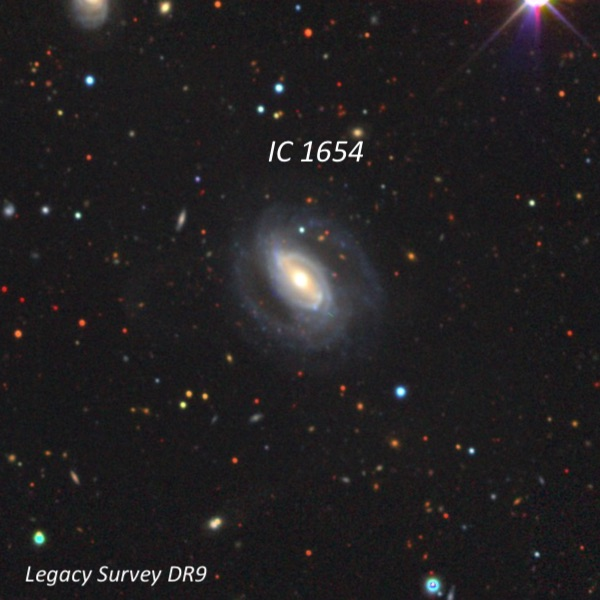
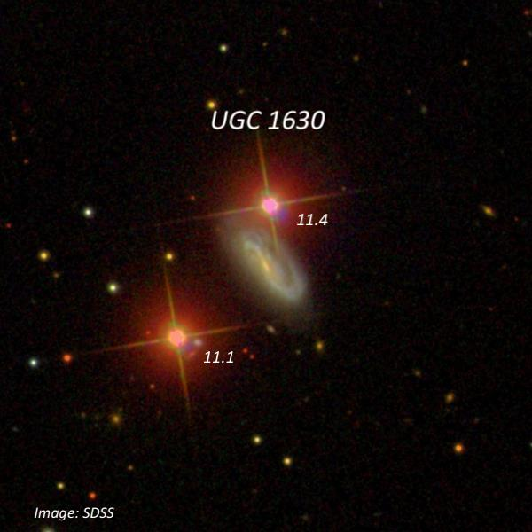
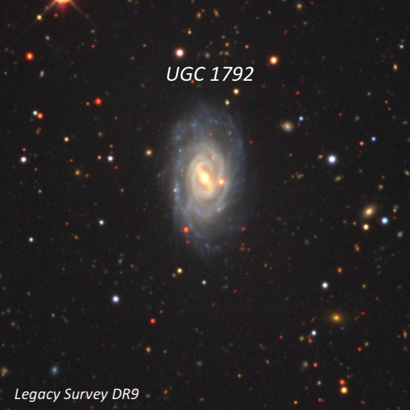
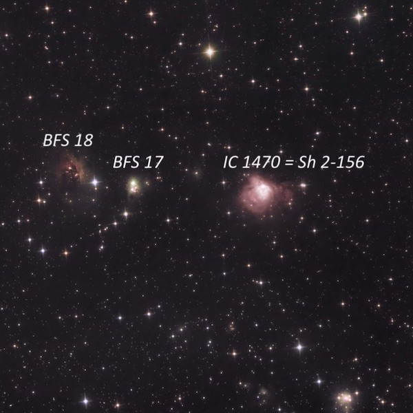
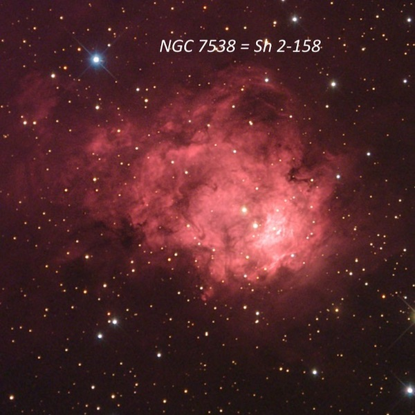
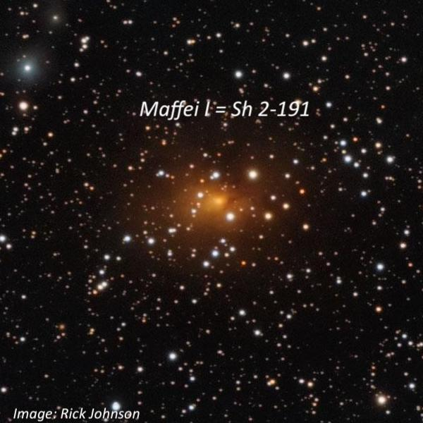

OR: Lake Sonoma on Dec. 30, 2024
With the observing prospects pretty slim for this new moon period, I decided at the last moment to take a chance on Lake Sonoma (Lone Rock lot) on Monday night (12/30/24). I was joined by Tim Lorz, who brought his 10-inch from Concord.
Conditions started off pretty poor with clouds streaming in from the west for the first couple of hours and passing mostly to the south up to an elevation of ~40°. But by 8:30 to 9:00, the skies completely cleared with fairly dark skies (SQM 21.2-21.3) and pretty good transparency. The temperature stayed in the mid to low-40’s until midnight. The only downside was some dew which dampened my table and printed charts somewhat, but this time of year you can’t be too picky, so I feel fortunate to have snuck in a night at a dark(ish) site – this makes 30 successful observing nights in 2024.
With my 14.5-inch Starmaster, I’ve been working on a rather odd combination of UGC galaxies (missed in the NGC and IC) and later in the night switching over to Sharpless HII regions using a Gen3 PVS-14 night-vision and a 6nm H-alpha filter. Here’s a few examples from the couple of dozen objects observed.
1) UGC 798 = IC 1654
01 15 11.8 +30 11 41
V = 14.0; Size 1.3'x1.0'; PA = 45°
At 226x; Faint but can hold steadily, slightly elongated, low even surface brightness, 0.6' diameter. A mag 9.3 star is 3.3' NW. Brighter IC 1659 is 15' NE. It appeared fairly faint, round, ~25" diameter (core region), moderately high surface brightness with a very small bright nucleus. These two galaxies are outlying members of the NGC 383/410 group.

2) UGC 1630 = PGC 8163
02 08 24.6 +14 58 19
V = 13.8; Size 1.0'x0.5'; PA = 43°
At 226x; Faint, small, slightly elongated, ~35"x25". Close to two fairly bright stars: centered just 0.45' S of a mag 11.1 star and 0.9' NW of a mag 11.4 star! NGC 820, which is situated 37' S, has an identical redshift (z = .015).

3) UGC 1792 = PGC 8882
02 19 52.7 +29 02 10
V = 13.4; Size 1.7'x1.2'; PA = 179°
At 226x; Fairly faint (visible continuously with averted), oval ~5:3 N--S, uniform surface brightness, 0.6'x0.3'. A mag 10.3 star is 4' SW and a mag 10.8 star is 3' NE. Located 25' E of mag 6.7 HD 14146.

4) Sh 2-156 = IC 147023 05 10.3 +60 14 37Size 1.2'x0.75'
Using 49x and H-alpha: Bright, small, roundish glow, ~1' diameter, high surface brightness. IC 1470 is located about 1.1° WNW of Sh 2-157. BFS 18 is just 9' ENE (probably part of the same complex). It appeared very faint, very small, elongated. A mag 10.4 star is off the SW edge. BFS 17 is 3' WSW of BFS 18. I noted a faint, extremely small glow that may involve a star. Possibly two close stars appeared nebulous as this is probably a reflection nebula with little or no emission.

5) Sh 2-158 = NGC 7538
23 13 38 +61 30 42; Cep
Size 10'x6'
Observed at both 24x and 49x with 6nm H-alpha filter: Bright, structured star-forming region with Sh 2-159 0.5° to the southeast. The overall shape is oval, ~10'x6', with a small section or tail on the east end sliced off by a dust lane. The brightest portion is on the west side, ~3.5'x2.5' oval N-S, with small a high surface brightness patch in the center. Just to the east the nebulosity is slightly weaker in a NNW-SSE direction and two mag ~11.5 stars are involved. The SWern star (mag 11.7 [WBN74] NGC 7538 IRS 6) is a massive O3-type and one of the two ionizing sources of Sh 2-158. A faint tail is attached at the NE end, and it extends towards the SE where it fades and widens. The tail is otherwise detached from the main body by a low contrast dust lane.

6) Maffei 1 = Sh 2-191
02 36 35.5 +59 39 18; Cas
Size 0.6'x0.5'; PA = 100°
At 49x, I was surprised to find that Maffei I appeared as a faint oval glow oriented E-W (with the 6nm H-alpha filter) involving a few stars. The very small, bright nucleus was off center with respect to the visible stars. The southern end of the huge IC 1805 loop (Heart Nebula) is only ~35' north!
With the 685nm IR pass filter, an irregular ring of stars was prominent and inside was a very small "knot" (the galaxy's nucleus). It was fairly bright and offset to the SE side of the ring.
Paolo Maffei discovered Maffei 1 and 2 in 1968 on a near infrared Schmidt plate while searching for T Tauri stars in the field of the giant HII region IC 1805. This heavily reddened galaxy is the nearest normal large elliptical. Maffei 1 would be among the ten brightest galaxies in the northern sky and span 20' in diameter if not situated heavily obscured (~4.7 magnitudes of visual extinction) behind the Milky Way. The galaxy is invisible on the blue POSS I but prominent on the red POSS I. Stewart Sharpless first listed Maffei 1 as an emission nebula (Sh 2-191).
